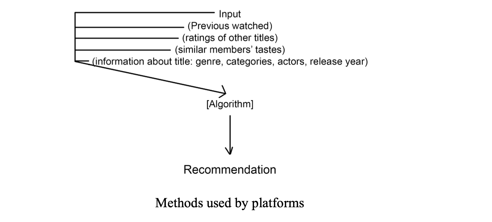
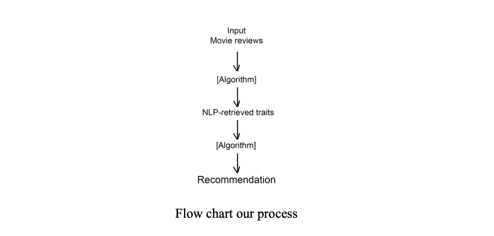

ReviewFind is a movie recommendation algorithm designed to quantify and recommend movies to users based on specific descriptive terms found in user reviews. Unlike traditional recommendation systems that typically rely on genre, ReviewFind will focus on multiple user reviews to suggest movies to ReviewFind users more relevantly. This approach aims to enhance user experience by discovering and recommending films that align more closely with individual tastes and descriptive preferences.
With the advent of numerous streaming platforms and the rapid increase in available content, viewers face an overwhelming challenge in finding movies that truly align with their personal tastes. Platforms such as Netflix, Hulu, and Amazon Prime Video offer vast libraries of movies and TV shows, but their recommendation systems are often limited to content available within their own ecosystem. This restriction not only narrows the scope of recommendations but also hinders the discovery of potentially enjoyable content that exists on other platforms.
Traditional recommendation systems typically rely on a combination of user viewing history, ratings, and the behavior of other users with similar tastes to suggest new content. While these systems have become quite sophisticated, they often fall short in capturing the nuanced preferences of individual users. For instance, a user who enjoys a particular movie might be recommended a sequel or another movie within the same franchise, rather than something new and unique that aligns with specific elements they appreciated in the original film. This approach can result in a repetitive viewing experience, where users are not exposed to the broader range of content that might appeal to them.
ReviewFind seeks to address these limitations by introducing a recommendation algorithm that leverages natural language processing (NLP) to analyze user reviews. Instead of relying solely on genre, viewing history, or user ratings, ReviewFind delves into the specific descriptive terms found within reviews, such as "gritty," "heartwarming," or "intense." By focusing on the qualitative aspects of reviews, ReviewFind aims to create a more personalized and robust recommendation system that highlights movies based on the detailed preferences expressed by users in their reviews.
One of the key advantages of ReviewFind is its platform-agnostic nature. Unlike mainstream recommendation systems confined to a single platform, ReviewFind can recommend movies across various streaming services, offering users a broader spectrum of content. This flexibility ensures that users receive the most relevant recommendations, regardless of the platform hosting the content.
To achieve this, ReviewFind utilizes a dataset that includes both ratings and summary/review text. By extracting features from these review texts, the algorithm can better quantify and label movies, making suggestions based on the specific qualities users seek. This innovative approach not only enhances the recommendation process but also addresses the common frustrations users experience with traditional systems.
In summary, ReviewFind proposes a novel solution to the challenge of finding movies that align with individual tastes. By harnessing the power of NLP to analyze user reviews, ReviewFind offers a more nuanced and flexible recommendation system that transcends platform boundaries. This approach promises to enrich the user experience by providing more relevant and diverse movie suggestions, ultimately making the search for enjoyable content less daunting and more rewarding
ReviewFind is unique solution to a common problem, however there have been many attempts to create an algorithm with the same function. Some popular variations are used by streaming platform giants like Netflix, Hulu, HBO Max, and more. A very common method in movie recommendation algorithms uses user profiling, which collects and compiles user data over time spent on the platform and determines what movie to recommend next by comparing their list of movies and other users against a single user’s profile5. These methods vary across platforms, but platforms such as Netflix, Hulu, and HBO Max use a slightly varying version of this system:
Their system takes in a variation of inputs and passes them through their algorithm in order to recommend a movie from its own database. To compare, this is what our approach is doing:
Our input can be as simple as a few movie reviews for a single movie as our testing set, and NLP-retrieved traits for a movie can be determined and assigned automatically, allowing them to be searched for later by our end-user. Since our input requires significantly less information to create a recommendation as compared to other approaches, it’s easier to add more reviews to the training set and improve our algorithm.
We found an Amazon reviews dataset that is tied to product ASINs4, which can be used to identify a movie that the review was left on. This is a massive dataset, around 8 million individual reviews across 250,000 movies, so an average of 32 reviews per movie, assuming a uniform ratio of reviews per movie. It is easy to obtain (a simple zipped file is available to download) and is the most relevant dataset we could find for our purpose. We were also interested because of the high number of reviewers with over 50 reviews, which made it a good candidate for collaborative filtering. Since our objective is to augment collaborative filtering with NLP, we thought it would be a good place to start from.
An issue with this dataset is that no data is labeled, and we’ve had to go about labeling it ourselves in order to reduce subjectivity around evaluating our recommender. Our solution was to use the inter-annotator agreement system and Cohen’s kappa3 on all the top recommendations which had tied cosine similarities (against the input movie review).
This way, we were able to get around manually classifying all the movies in the dataset as we gradually increased the size of our training set. This ended up capping itself at around 3000 movies as our decision to use cosine similarities yielded too many “matches” and it became infeasible to manually score the outputs.
We utilized an Amazon reviews dataset, which contains approximately 8 million individual reviews across 250,000 movies, providing an average of 32 reviews per movie. We attempted to normalize and clean this data.
This had the added benefit of greatly reducing the size of the dataset. We also were able to retain a reasonable amount of users with a high number of reviews (speculating here, but this may possibly be because people who left a lot of reviews also had a lot of reviews survive the pruning of “useless” reviews.)
Step 1: Data Preparation
We tried 2 approaches - only step 1, and a combination of both steps (overlapping tokens were not included):
Step 2: Feature Extraction
Step 3: Building the Recommender
Simplified Example:
Due to our simplistic design choices, we anticipated that the accuracy and diversity of results by our recommender system would begin to fail as we introduced more and more movies into our training set. It's important to note that our model cannot work with novel movies in training due to the lack of labels and vectors—although it can work with novel review content for any movie in the training set. Moreover, since we performed our evaluation (our “loss function” of sorts) by hand through Cohen’s Kappa, it became infeasible to continue after 3000 movies as our model appeared to be saturated—with agreement rate peaking at 0.7, indicating “substantial agreement”. The rate dropped after that.
We learned that there were many issues with our design:
On a final note, we felt that using inter-annotator agreements was an interesting choice because the core of our system did not utilize machine learning, so we were evaluating the raw pre-calculated similarities.
Fortunately, we have some clear places for improvement. Instead of using BoW, we can use a word embedding model on our descriptive terms, and extract sentiment from the text itself instead of using the rating system. We can get rid of cosine similarity for a function that is saturated less easily and does not bias towards popular titles, perhaps like TF-IDF. We are curious about using the e inter-annotator agreement as a loss function for a neural network model- we believe we can do so by retaining the small 3000 review size, and reducing the number of top recommendations to a smaller number like 4. This has some obvious advantages, like being able to handle different numbers of reviews, and creating deeper relationships for movies in the same genre.
ReviewFind offers a unique approach that utilizes natural language processing (NLP) to analyze user reviews, which allows its recommendations to consider qualitative data from reviews, augmenting the traditional approach to collaborative filtering recommendation systems. Future work will involve scaling the system, refining the algorithm, and conducting more comprehensive user studies.